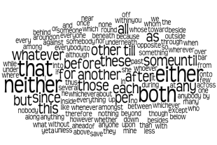
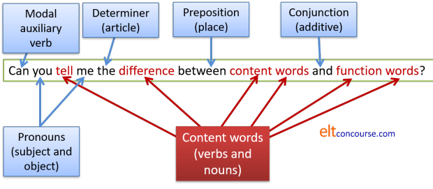
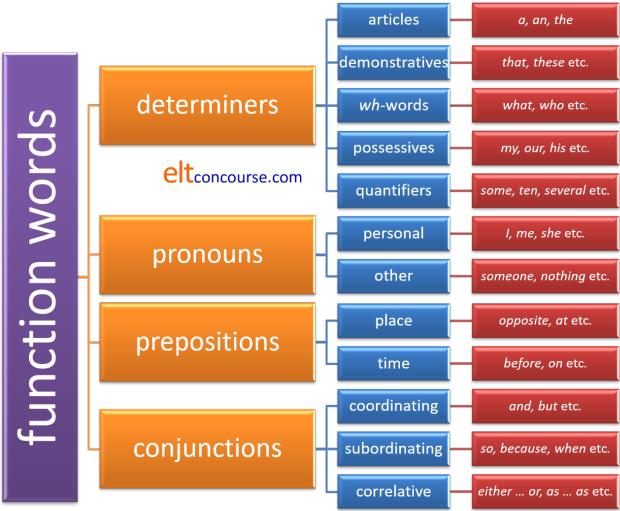

Function words: the essential guide

10 classes of words are usually recognised in English. These
are sometimes called 'parts of speech'.
Of these, some are open-class items and some are called
closed-class items. If you don't know the difference, go to
the guide to word class and look through
that. Then shut that to come back to this page.
 |
Two sorts of words |
Take a look at this sentence:
- The glumpy finkleblender in the dwoodledam bongled bederously and flummbered all my quitchicants.
In this sentence some of the words have been replaced by
nonsense.
What's important here is that we can make a stab at the meaning of the
sentence like this.
Try it for yourself and then click on the
 to reveal some ideas.
to reveal some ideas.
|
The glumpy finkleblender |
We can guess that
glumpy is an adjective
describing the noun finkleblender
because of the analogy with other adjectives (such as wonky, shaky,
slippery, happy etc.).
We can also guess that the finkleblender is something or someone that performs an action by analogy with blender, gardener, writer, mixer and so on (it may even blend finkles). It ends with -er and that is often the way the doer of an action is signalled in English. Because the phrase is introduced by the definite article (the) we can compare it to something like The swanky juice-maker or The wonky lawnmower. We also know that the reader or hearer of this sentence knows about the finkleblender because we have used the definite article to identify it. |
|
in the dwoodledam |
This is
probably a place and a noun
because
a) something can be in it and b) it is preceded by the definite article. |
|
bongled bederously |
We can guess the verb is
bongle and it has a regular
past tense. We can also surmise that
bederously is an adverb from
the adjective bederous because
it follows the verb and ends in -ly. We can
compare this with other similarly formed verb phrases
such as:
opened carefully shouted loudly and so on |
|
and flummbered all my quitchicants |
Again,
flummber is probably a regular verb which takes an object and
quitchicants is a plural noun
following all my.
We also know that the quitchicants have been flummbered by a finkleblender, by the way. |
Easy. Now try it with the second sentence:
- Fleeb machine infuriated gruttle flinkle bibgle hoblem extent gringle jid threw jadd fotig immediately.
Hmm. Not so easy. We can understand that the sentence is probably about a machine and anger but that's about all because we can't see the relationships that the words have with each other.
| Think about what made sentence 2
more difficult to understand than sentence 1. Click here when you have some sort of answer. |
In Sentence 1 the words that have been replaced with nonsense
are content words.
We know that such words carry meanings so we are quite capable of
guessing what they are from the clues we have been given. In that
sentence we have:
- an adjective: glumpy
- nouns: finkleblender, dwoodledam, quitchicants
- verbs: bongle, flummber
- an adverb: bederously
None of these are real words, of
course, but we know that they mean something.
In that sentence, too, we have retained the real English functions
words and we know what these words do and how they link the others
together. In the sentence we have:
- the: the definite article. We know that this is one way to define a noun.
- in: a preposition (usually).
We know that it serves to link a verb to a noun and give some
information about where or when something happened so we get,
e.g.:
She waited in the station
He arrived in the morning
etc. - and: a conjunction. We
know this operates to join ideas together to make longer
sentences of phrases so we get, e.g.:
She came and spoke to me
I ate the apples and the yoghurt
The house was cold and empty
etc. - all: a determiner which tells
us what quantity of something we are referring to. We can
get, therefore, for example:
all night
all the time
all of the children
etc. - my: another type of determiner
which tells us who the noun belongs to, comes from or describes
so we get, for example:
my letter to the boss
my house
my reaction
my problem
etc.
In Sentence 2 all the function words have been
replaced.
We have retained the content words (machine infuriated, extent, threw
and immediately) but we have not shown how they are connected.
That makes it almost impossible to understand.
 |
The moral of the story |
The moral in the story is that meaning is made up not only of the
meanings of the words but of the grammatical function and relationships
between the words. We need both to make any kind of sense.
Incidentally, the words that were replaced in sentence 2. were:
- that: a type of determiner called a demonstrative
- me: a pronoun referring to the object and standing for the speaker or writer
- to: a preposition with many functions
- such: a determiner in this case
- an: the indefinite article which appears before vowel sounds and refers to what we mean but not exactly which we mean
- that: the same word again but acting here as a conjunction to link ideas
- I: a pronoun but referring to the subject (the speaker or writer)
- out: a preposition which gives the opposite idea of in
If we put the function words into the
sentence in that order, replacing all the nonsense words we get:
That machine infuriated me to such an extent that I threw
it out immediately.
All the nonsense words were in place of function, not content, words.
Function words |
Function words are words which are only meaningful when they are in
company with other words.
For example. If you say house to people who speak
English, they will know what you mean but if you say at, they
are unlikely to have a clue what you mean.
(By the way, this site uses the term function words but you may see
the same concept called grammatical words or structure words or even synsemantic words.)
Function words are all closed-class items. They are closed in the sense that we do not often add new function words to a language in the way that we can add new content words for new items and ideas.
| Which of the following word classes are function words and which are
content words? Click here when you have an answer. |
nouns | demonstratives | verbs | conjunctions | prepositions | adverbs | articles | pronouns | adjectives | interjections
You should have this list:
| Content words | Function words |
| noun –
Mary, laptop, ashtray, Prime
Minister adjective – happy, new, uncomfortable adverb – sadly, very, often verb – go, smoke, lift |
article –
a(n), the demonstrative – this, that, those pronoun – he, she, we preposition – of, without, in front of conjunction – and, when, although, because interjection – ouch, ugh, oh |
There are some things to note:
- Some verbs are considered function words.
These include modal auxiliary verbs such as can, might, should etc. which only carry meaning combined with a content-word verb such as decide. Standing alone, could has no obvious meaning but combined with imagine, for example, it does. - Some other verbs are similar.
These include be, get, do and have. These are only function words when they act to form part of a tense or other structure. They are, in fact, primary auxiliary verbs. For example, in:
I have a house in Miami – the verb have is not operating as a function word here because it has meaning – i.e., own.
I have been gardening – here, both have and been are function words because they are making a tense structure, not carrying meaning apart from a grammatical one.
Do you want a drink? – here do is a function word which English uses to make a question form in some tenses.
I'll do the work – here do is not a function word because it carries lexical meaning – i.e., perform. - There are some other words (sometimes called particles) which show the attitude of the speaker rather than carrying meaning per se. Words such as Well, ..., if, but etc. do not always act as conjunctions joining clauses but can simply signal attitude.
- Interjections such as ouch! certainly do carry
meaning but, although they are usually considered content words,
you can't
actually define the meaning and it may shift depending on
circumstances. That word could mean, for example:
She's singing off key
or
I have hurt myself. - Words like no, right, yes, maybe are also considered function words for similar reasons. These are sometimes called pro-sentences because they can act as whole utterances in themselves.
 |
The commonest words |
In 1953, Michael West published what is known as the General
Service Word List (the GSL) of the most useful words in English.
Of course, the list has been updated since then but the list of
function words remains serviceable simply because these are
closed-class items. The original General Service List did not
contain some nouns and verbs (such as computer
and click) which are now frequent
over 60 years later because times change. Function words
don't.
The list did not use frequency as the only criterion but it was the
major one.
| To see what is meant, here are the top one hundred most frequent words in English: | |||||||||||||||||||
| 1 2 3 4 5 6 7 8 9 10 |
the be to of and a in that have I |
11 12 13 14 15 16 17 18 19 20 |
it for not on with he as you do at |
21 22 23 24 25 26 27 28 29 30 |
this but his by from they we say her she |
31 32 33 34 35 36 37 38 39 40 |
or an will my one all would there their what |
41 42 43 44 45 46 47 48 49 50 |
so up out if about who get which go me |
51 52 53 54 55 56 57 58 59 60 |
when make can like time no just him know take |
61 62 63 64 65 66 67 68 69 70 |
people into year your good some could them see other |
71 72 73 74 75 76 77 78 79 80 |
than then now look only come its over think also |
81 82 83 84 85 86 87 88 89 90 |
back after use two how our work first well way |
91 92 93 94 95 96 97 98 99 100 |
even new want because any these give day most us |
| And this is the list from the GSL of the top 100 most useful words. As you see, the lists are very similar. | |||||||||||||||||||
| 1 2 3 4 5 6 7 8 9 10 |
the be of and to a in have it you |
11 12 13 14 15 16 17 18 19 20 |
for not that on with do as he we this |
21 22 23 24 25 26 27 28 29 30 |
at they but from by will or his say go |
31 32 33 34 35 36 37 38 39 40 |
she so all about if one my know there which |
41 42 43 44 45 46 47 48 49 50 |
can get her would think like more their your when |
51 52 53 54 55 56 57 58 59 60 |
what make time who see up people some out me |
61 62 63 64 65 66 67 68 69 70 |
good other year well our very just them no take |
71 72 73 74 75 76 77 78 79 80 |
because come could use work then now also than him |
81 82 83 84 85 86 87 88 89 90 |
into only want look these its new give first way |
91 92 93 94 95 96 97 98 99 100 |
thing any over right after find day where most should |
Only 26 of the top 100 words in both lists are content words and
we are up to number 28 or 29 before we encounter the first of them (highlighted).
In the first 50 most common words, only 2 are content words.
The word computer by the way, comes in at number 421 and
the word click does not appear in the first 2000.
 |
The list of function words |
Here is another list of the most common function words in English, divided into the four main categories. The verbs which sometimes act as function words (see above) are not included.
| Conjunctions | Determiners | Prepositions | Pronouns | ||
|
after although and as because before both but either for however if neither nor once or since so than that therefore though thus till unless until when whenever where wherever whether while yet |
a all another any both each either every her his its my neither no other our per some that the their these this those whatever whichever your |
about above across after against ahead along among amongst around as at bar before behind below beneath beside besides between beyond but by down during except for from in inside into less like |
near of off on onto opposite outside over past per round save since through till to toward under underneath until up upon with within without |
all another any anybody anyone anything both each either everybody everyone everything few he I it many mine neither nobody none nothing one other several she some somebody someone something that these they |
this those we what whatever which whichever who whoever whom whose you |
In this list, articles count as determiners and so do
demonstratives.
No attempt has been made to list interjections or pro-sentences.
Alert people will have noticed that some words appear in more
than one column. That's because they can function as different
word classes in different environments.
Examples:
- another can be a determiner:
I want another beer
or a pronoun
A beer was provided and another for my friend
The word both can do the same sort of thing:
I wanted both beers and both were provided - either can function as a conjunction
Either you do it or I must do it
or as a determiner:
Either beer will do
or as a pronoun
Please don't give me either - since can be a
conjunction
I'll tell you since you ask
and a preposition
I have been here since Tuesday - these can be a determiner:
these beers are good
or a pronoun:
... but these are better
and so on.
There's no proper test on this but to
check you understand, identify the function words and what sort of
functions they are performing in this sentence.
When you have done that, click here.
Can you tell me the difference between content words and function words?

A summary:
Here's a cut-out-and-keep aide memoire for function words:

 |
Classroom implications |
This section does not consider teaching approaches to function words. There aren't any. The range of types and functions means that lessons, or a series of lessons, can only sensibly be focused on small subgroups of function words such as:
- conjunctions which add information (additives) or those which contrast
- indefinite pronouns (any, some, every etc.)
- the definite article
- prepositions related to proximity (near, at, against, beside etc.)
- Don't be tempted to think that because function words are so
familiar to you that they will be easy for learners to
understand and use. All languages have ways of making
relationships between content words clear and to do that they
deploy all kinds of different functions but not necessarily
function words as such.
Some languages will do it by adding suffixes to the ends of
words, some by using different sorts of markers in sentences and
so on.
Even in languages which are similar to English (i.e., most European ones) the variations are enormous and complicated.
This means that you will need explicitly to focus on what function words are doing in sentences and how they work. - Translation is fraught with problems. It is relatively
simple to translate many content words from one language to
another (although where word meanings stop and start is an
issue as are collocation, countability and connotation etc.).
So, for example, book is variously, Buch, boek,
كتاب, libro, leabhar, βιβλίο, könyv, livre etc.
This does not work with any but the simplest function words.
Even something as simple as the idea of either ... or provides problems with many languages rendering it as something like or ... or (ose ose, vagy vagy, jew jew, ou ou etc.). Other languages have a single word to stand for the concept and some use three words. Don't assume for a second that any of the words for either in other languages can change into a determiner or a pronoun as the word can in English. - Don't rely on explanation. Because of the variations in how people's first languages function grammatically (and function words are grammatical) learners need to see the words in action, understand the concepts they represent and deploy them to make their own meanings. That means presenting, teaching and practising.
- Keep the focus. The lists above contain four different sorts of function words. It makes sense to focus on a few of one sort only at a time.
- Even within the groups, there are conceptual subgroups. For example, within the determiners lie the articles and the English article system is itself complex and difficult to understand. The same goes for the other groups. Prepositions, in particular, are virtually non-translatable across languages and a source of persistent error and confusion.
- Take opportunities to focus on function words which come up when you are doing something else. They are so important that you should miss no chance to help your learners understand them and use them successfully.
| Related guides | |
| primary auxiliary verbs | for a guide to be, have, do and get as function words |
| word class | for the essential guide to word class |
| personal pronouns | the essential guide |
| conjunctions | the essential guide |
| articles | the essential guide |
| prepositions | the essential guide |
| determiners | the essential guide |
| semantics | for an overview of the meaning of mean |
| PDF document | for the list of function words in English |
For reference, the General service Word List is available from http://jbauman.com/aboutgsl.html and a good deal more information is available at http://www.newgeneralservicelist.org.
Try a short test to see if you can identify what sort of function words are in some sentences.